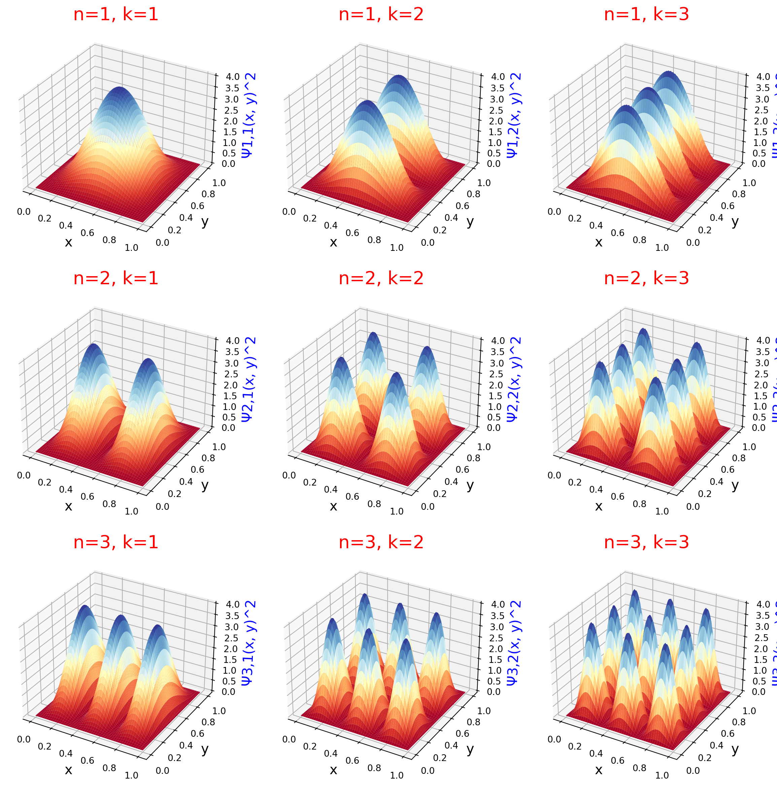

import matplotlib.pyplot as plt
from matplotlib import cm
import numpy as np
from math import sin, sqrt, pi
class ParticleInABox1d:
"""
This class models a one-dimensional particle in a box.
"""
def __init__(self, mass, length):
"""
Units for mass and length can be in any units you wish,
as long as they are consistent.
Parameters
----------
mass: float
The mass of the particle.
length: float
Length of the one-dimensional box.
"""
self.mass = mass
self.length = length
def wavefunction(self, n, x):
"""
Returns the value of the wavefunction with quantum number n
at position x.
Parameters
----------
n: int
Quantum number of the box.
x: float
Postion in the box to evaluate. 0 <= x <= self.length
Returns
-------
float
The value of the wavefunction at that point.
"""
return sqrt(2 / self.length) * sin(n * pi * x / self.length)
def prob_density(self, n, points=100):
"""
Returns the probability density at the given number of points
along the length of the box.
Parameters
----------
n: int
The quantum number.
points: int
The number of points to sample along the length of the
box.
Returns
-------
np.array, list
The first array are the x coordinates along the box, and the second
array is the probability density at that point.
"""
xs = np.linspace(0, self.length, points)
ys = [self.wavefunction(n, x) ** 2 for x in xs]
return xs, ysThis post explores the simplest quatnum mechanical system: the particle in a one-dimensioanl infinite potential well, also known as the one-dimensional particle in a box.
\[ \psi_{n}(x) = \sqrt{\frac{2}{L}} \sin\Bigl(\frac{n \pi x}{L}\Bigr) \]
\[ E_n = U_0 + \frac{n^2 h^2}{8 m L^2} \]
\[ n = 1, 2, 3, \dots \]
Particle in a one-dimensional box
This Python code on this page explores Section 11.3.1 in Molecular Modeling for Beginners, 2nd Ed. by Alan Hinchliffe. In this Section, the author described the particle in a one-dimensional infinite well.
It has the following equations to describe its behavior:
\[ \psi_{n}(x) = \sqrt{\frac{2}{L}} \sin\Bigl(\frac{n \pi x}{L}\Bigr) \]
\[ E_n = U_0 + \frac{n^2 h^2}{8 m L^2} \]
\[ n = 1, 2, 3, \dots \]
\[ 0 \leqslant x \leqslant L \]
box = ParticleInABox1d(1, 1)
fig, axs = plt.subplots(nrows=3, ncols=2, figsize=(10, 15), sharex=True, sharey=True)
xs, ys = box.prob_density(n=1)
axs[0, 0].set_title('n = 1', size=20, color='r')
axs[0, 0].set_ylabel('Ψ1(x)^2', size=15, color='b')
axs[0, 0].set_xlabel('x', size=15)
axs[0, 0].set_xlim(0, box.length)
axs[0, 0].set_ylim(0, max(ys) * 1.05)
axs[0, 0].plot(xs, ys)
xs, ys = box.prob_density(n=2)
axs[0, 1].set_title('n = 2', size=20, color='r')
axs[0, 1].set_ylabel('Ψ2(x)^2', size=15, color='b')
axs[0, 1].set_xlabel('x', size=15)
axs[0, 1].set_xlim(0, box.length)
axs[0, 1].set_ylim(0, max(ys) * 1.05)
axs[0, 1].plot(xs, ys)
xs, ys = box.prob_density(n=3)
axs[1, 0].set_title('n = 3', size=20, color='r')
axs[1, 0].set_ylabel('Ψ3(x)^2', size=15, color='b')
axs[1, 0].set_xlabel('x', size=15)
axs[1, 0].set_xlim(0, box.length)
axs[1, 0].set_ylim(0, max(ys) * 1.05)
axs[1, 0].plot(xs, ys)
xs, ys = box.prob_density(n=4)
axs[1, 1].set_title('n = 4', size=20, color='r')
axs[1, 1].set_ylabel('Ψ4(x)^2', size=15, color='b')
axs[1, 1].set_xlabel('x', size=15)
axs[1, 1].set_xlim(0, box.length)
axs[1, 1].set_ylim(0, max(ys) * 1.05)
axs[1, 1].plot(xs, ys)
xs, ys = box.prob_density(n=8)
axs[2, 0].set_title('n = 8', size=20, color='r')
axs[2, 0].set_ylabel('Ψ8(x)^2', size=15, color='b')
axs[2, 0].set_xlabel('x', size=15)
axs[2, 0].set_xlim(0, box.length)
axs[2, 0].set_ylim(0, max(ys) * 1.05)
axs[2, 0].plot(xs, ys)
xs, ys = box.prob_density(n=16)
axs[2, 1].set_title('n = 16', size=20, color='r')
axs[2, 1].set_ylabel('Ψ16(x)^2', size=15, color='b')
axs[2, 1].set_xlabel('x', size=15)
axs[2, 1].set_xlim(0, box.length)
axs[2, 1].set_ylim(0, max(ys) * 1.05)
axs[2, 1].plot(xs, ys)The plots in Figure 1 show the probability density for increasing values of the quantum number n. The greater the curve’s height, the higher the probability of finding the particle in that region of the box. At the lowest quantum number n=1, the particle is most likely to be found in an area surrounding the middle of the box. As n increases, the particle is more likely to be found in more positions of the box. The curve at n=16 demonstrates the important correspondence principle. The correspondence principle says that as quantum number increases, the particle position predicted by quantum mechanics approaches the position indicated by classical mechanics.
Particle in a two-dimensional box
Note: The two-dimensional particle in a box should not be confused with two non-interacting particles in a one-dimensional box. They are completely different concepts.
Here, I follow Hinchliffe Section 11.5
The particle in a two-dimensional box extends the particle in a box concept to two dimensions. It still contains a single particle; however, this particle lies on a plane surrounded by walls of infinite potential. It uses quantum numbers n and k for the levels along the x-axis and y-axis, respectively (some authors use “nx” and “ny” for these numbers).
I will simplfy the equations by assuming the side of the box are both equal to length L
\[ E_{n,k} = U_0 + \frac{n^2 h^2}{8 m L^2} + \frac{k^2 h^2}{8 m L^2} \]
\[ \psi_{n,k}(x, y) = \frac{2}{L} \sin\Bigl(\frac{n \pi x}{L}\Bigr) \sin\Bigl(\frac{k \pi y}{L}\Bigr) \]
\[ n, k = 1, 2, 3, \dots \]
\[ 0 \leqslant x \leqslant L \]
\[ 0 \leqslant y \leqslant L \]
class ParticleInABox2d:
def __init__(self, mass=1, length=1):
"""
Parameters
----------
mass: float
The mass of the particle.
length:
Legnth of each side of the box in x and y dimensions.
"""
self.mass = mass
self.length = length
def wavefunction(self, n, k, x, y):
"""
Parameters
----------
n: int
Quantum number in the x dimension
k: int
Quantum number in the y dimension
x: float
x position in the box. Range from zero to self.length
y: float
y position in the box. Range from zero to self.length
Returns
-------
float
The value of the wavefunction n, k at x, y
"""
return (2 / self.length) * sin(n * pi * x / self.length) * sin(k * pi * y / self.length)
def prob_density(self, n, k, points=100):
"""
Parameters
----------
n: int
Quantum number in the x dimension
k: int
Quantum number in the y dimension
Returns
-------
np.array
Float 2d numpy array of squares of wavefunctions at the various
points.
"""
xs = np.linspace(0.0, self.length, points)
ys = np.linspace(0.0, self.length, points)
zs = np.zeros((points, points), np.float64)
for ix, x in enumerate(xs):
for iy, y in enumerate(ys):
zs[ix, iy] = self.wavefunction(n, k, x, y) ** 2
return xs, ys, zsbox_2d = ParticleInABox2d(mass=1.0, length=1.0)
ns = [1, 2, 3]
ks = [1, 2, 3]
fig, axs = plt.subplots(nrows=len(ns), ncols=len(ks), figsize=(15, 15), subplot_kw={"projection": "3d"})
for idx_n, n in enumerate(ns):
for idx_k, k in enumerate(ks):
xs, ys, zs = box_2d.prob_density(n, k)
xs, ys = np.meshgrid(xs, ys)
ax = axs[idx_n, idx_k]
ax.set_title(f'n={n}, k={k}', size=20, color='r')
ax.set_zlabel(f'Ψ{n},{k}(x, y)^2', size=15, color='b')
ax.set_xlabel('x', size=15)
ax.set_ylabel('y', size=15)
ax.plot_surface(ys, xs, zs, cmap=cm.RdYlBu, linewidth=0, antialiased=True)
box_2d = ParticleInABox2d(mass=1.0, length=1.0)
ns = [1, 2, 3]
ks = [1, 2, 3]
fig, axs = plt.subplots(nrows=len(ns), ncols=len(ks), figsize=(15, 15), sharex=True, sharey=True)
for idx_n, n in enumerate(ns):
for idx_k, k in enumerate(ks):
xs, ys, zs = box_2d.prob_density(n, k)
xs, ys = np.meshgrid(xs, ys)
ax = axs[idx_n, idx_k]
ax.set_title(f'Ψ{n},{k}(x, y)^2', size=15, color='b')
ax.set_xlabel('x', size=15)
ax.set_ylabel('y', size=15)
cs = ax.contour(ys, xs, zs, cmap=cm.RdYlBu, antialiased=True)
ax.clabel(cs, inline=True, fontsize=10)In Figures 2 and 3, the height of the curves, or the higher values of the innermost contour line, show a greater probability that the particle will live in the corresponding region of the box. As in the one-dimensional case, we see that for higher values of n and k, there are more peaks in the corresponding axes of the two-dimensional box.